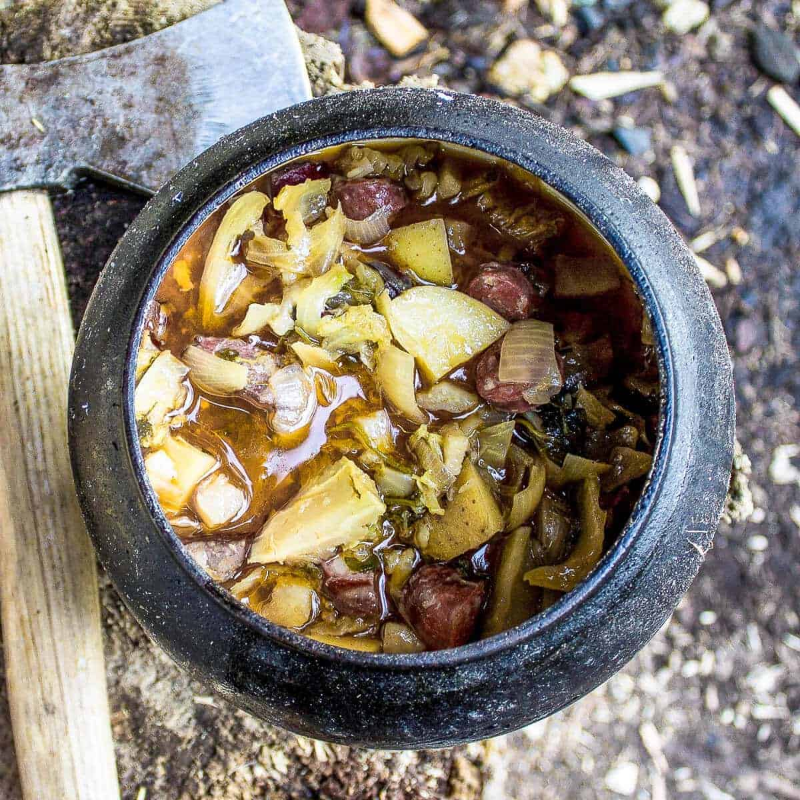

Stew - A healthy dinner for a strong raider!

What is stew?
I think everyone knows what stew is.. if you do not ... you can google
¯\_(ツ)_/¯
PREP TIME: 10 min
COOK TIME: ~5h min
TOTAL TIME: ~5h & 10 min
Ingredients
- 2 large onions
- 4 cloves garlic
- 2 large potatoes
- 450g meat of choice - beef,lamb,pork,chicken...
- 225g bacon (optional)
- 1/2 cabbage
- 500ml beer
- 500ml water / meat or vegetable stock
Instructions
- Place all ingredients together into the pot and mix it well.
-
Cook at low medium temperature for about 5 hours monitoring it
every now and then
-
Season with salt and pepper when done.
-
You can also chop up some herbs and add them